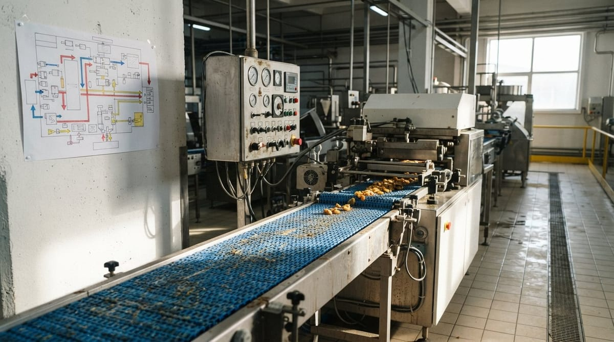

Mapa de procesos en la gestión de calidad

Mapa de procesos en la gestión de calidad
Si trabajas en calidad en una empresa agroalimentaria, seguro que has oído hablar del mapa de procesos en la gestión de calidad. Es una de esas herramientas que todo el mundo reconoce en una auditoría, pero que muchas veces se queda en un esquema colgado en la pared o en una diapositiva del manual. En este artículo vemos qué pide realmente la norma, cómo se clasifican los procesos y cómo construir un mapa que sirva para gestionar el día a día y no solo para pasar la auditoría.
Qué es el enfoque por procesos que pide ISO 9001 y por qué no es lo mismo que un organigrama
El enfoque por procesos de ISO 9001 consiste en entender y gestionar la organización como un conjunto de actividades interrelacionadas que transforman unas entradas en unas salidas con valor para el cliente. La Organización Internacional de Normalización (ISO, s.f.) lo sitúa como un principio central del sistema de gestión de la calidad, junto con el ciclo PHVA (planificar, hacer, verificar, actuar) y el pensamiento basado en riesgos.
La diferencia con un organigrama es clara:
- El organigrama responde a la pregunta «¿quién depende de quién?». Muestra jerarquías, departamentos y líneas de mando.
- El enfoque por procesos responde a «¿cómo se genera el producto o servicio y cómo se asegura su calidad?». Muestra flujos, entradas, salidas, responsables y puntos de control.
Un ejemplo habitual en una planta alimentaria: una no conformidad de materia prima no «pertenece» a Compras, ni a Calidad, ni a Producción. Atraviesa los tres departamentos. Con una visión jerárquica cada área mira solo su parcela y el problema rebota de unos a otros. Con una visión por procesos, alguien es responsable del proceso completo, desde la selección del proveedor hasta la liberación del lote, y las interfaces entre áreas están definidas.
Por eso los auditores no preguntan solo «¿quién es el responsable de calidad?», sino «¿cómo sabéis que este proceso funciona, qué indicadores usáis y qué hacéis cuando se desvía?». Si quieres prepararte para ese tipo de preguntas, te puede venir bien esta checklist de auditoría ISO 9001.
Los tres tipos de proceso: estratégicos, operativos y de soporte
La clasificación más extendida para ordenar un mapa de procesos distingue tres grandes bloques. Conviene tener clara la lógica de cada uno antes de dibujar nada.
Procesos estratégicos
Son los que definen la dirección de la empresa y fijan el marco en el que se mueve todo lo demás. No generan producto directamente, pero condicionan cómo se hace. Ejemplos típicos:
- Planificación estratégica y definición de la política de calidad.
- Gestión de objetivos e indicadores.
- Revisión por la dirección.
- Gestión de riesgos y oportunidades.
- Auditorías internas y mejora continua.
Procesos operativos
Son la cadena de valor: todo lo que transforma la materia prima en un producto que llega al cliente. En una empresa agroalimentaria suelen incluir:
- Compras y homologación de proveedores.
- Recepción y almacenamiento de materias primas.
- Elaboración, envasado y etiquetado.
- Control de calidad y liberación de producto terminado.
- Almacenamiento, expedición y distribución.
- Atención al cliente y gestión de reclamaciones.
Aquí es donde el sistema de calidad se cruza con los requisitos de seguridad alimentaria. El Reglamento (CE) 852/2004 (Reglamento [CE] 852/2004, 2004) exige a los operadores establecer procedimientos basados en los principios del APPCC, y esos procedimientos encajan de forma natural en los procesos operativos del mapa.
Procesos de soporte
Proporcionan los recursos y las condiciones para que los procesos operativos funcionen. Sin ellos la cadena de valor se detiene, aunque el cliente no los vea. Por ejemplo:
- Mantenimiento de instalaciones y equipos.
- Calibración y verificación de equipos de medida.
- Gestión de personas y formación.
- Limpieza, desinfección y control de plagas.
- Gestión documental y de registros.
- Sistemas informáticos y compras de insumos.
Entender bien los procesos estratégicos, operativos y de soporte evita un error frecuente: meter todo en la caja de «operativos» porque «todo es importante». Una buena clasificación ayuda a decidir quién es el responsable de cada proceso y qué indicadores necesita.
Cómo se dibuja un mapa de procesos sin que se quede en un diagrama bonito sin uso real
Dibujar el mapa es lo fácil. Lo difícil es que se use. Estos pasos ayudan a que el resultado sea una herramienta de gestión y no un adorno.
1. Parte de cómo trabajáis de verdad
Reúne a las personas que ejecutan los procesos, no solo a la dirección. Pregunta cómo se hacen las cosas hoy, no cómo dice el procedimiento que deberían hacerse. Un mapa construido desde un despacho suele chocar con la realidad de planta.
2. Define un nivel de detalle razonable
El primer nivel del mapa suele tener entre 10 y 20 procesos. Si tienes 60 cajitas, nadie lo leerá. Si tienes 4, no te aportará nada. Los procesos más complejos pueden desglosarse después en subprocesos o diagramas de flujo.
3. Documenta las interacciones
La utilidad real del mapa está en las flechas: qué sale de un proceso y qué necesita el siguiente. Cada proceso debería tener, como mínimo, una ficha con:
- Objetivo y alcance.
- Responsable del proceso.
- Entradas y salidas.
- Recursos necesarios.
- Documentos y registros asociados.
- Indicadores y frecuencia de seguimiento.
- Riesgos identificados y controles asociados.
4. Asigna indicadores que sirvan para decidir
Un indicador que nadie revisa es ruido. Elige pocos por proceso y que respondan a una pregunta útil: por ejemplo, el porcentaje de lotes de materia prima rechazados en recepción, el tiempo medio de cierre de no conformidades o el número de reclamaciones por cada mil unidades expedidas. Define quién los revisa, cada cuánto y qué se hace cuando se salen de lo esperado.
5. Conéctalo con el resto del sistema
El mapa debe enlazar con los procedimientos, los registros, los riesgos y las auditorías internas. Cuando una auditoría detecta una desviación, debería poder situarse en el proceso concreto afectado, y de ahí tirar del hilo hacia sus causas y sus interfaces.
6. Revísalo con regularidad
Un nuevo producto, una línea adicional, un cambio de proveedor clave o una externalización modifican los procesos. Incluye la revisión del mapa en la revisión por la dirección y actualízalo cuando cambie la realidad. Si el mapa lleva tres años sin tocarse y la empresa ha cambiado, no lo estás usando.
Diferencia con el control de proceso en tiempo real (parámetros físicos)
Conviene no confundir dos conceptos que comparten palabra. El mapa de procesos es una herramienta de gestión organizativa: describe qué procesos existen, cómo se relacionan, quién responde de ellos y cómo se mide su desempeño. Opera a nivel de sistema.
El control de proceso en tiempo real se refiere a la vigilancia de parámetros físicos y técnicos durante la producción: temperaturas, tiempos, presiones, pH, caudales o pesos. Opera a nivel de línea y busca detectar desviaciones en el momento en que ocurren. Ya lo hemos tratado en nuestro artículo sobre control de proceso en producción alimentaria.
La relación entre ambos es complementaria:
- El mapa te dice dónde está el proceso de elaboración, quién lo gestiona y con qué indicadores se evalúa.
- El control en tiempo real te dice qué está pasando ahora mismo en esa línea y si los parámetros están dentro de límites.
Los datos del control en tiempo real pueden alimentar los indicadores del mapa, por ejemplo, el porcentaje de desviaciones de temperatura por turno. Y el mapa ayuda a decidir qué puntos del proceso merecen un control más intensivo en función del riesgo. Un sistema maduro usa los dos niveles a la vez.
Conclusión
Un buen mapa de procesos no es un dibujo: es una forma de ordenar la organización para que la calidad no dependa de personas concretas ni de departamentos aislados. Si defines bien los procesos estratégicos, operativos y de soporte, asignas responsables e indicadores y lo mantienes vivo, el enfoque por procesos de ISO 9001 se convierte en una ayuda real para detectar problemas antes, coordinar áreas y llegar a las auditorías con evidencias claras.
Referencias
- Organización Internacional de Normalización. (s.f.). ISO 22000 e ISO 9001. https://www.iso.org/
- Reglamento (CE) n.o 852/2004 del Parlamento Europeo y del Consejo, de 29 de abril de 2004, relativo a la higiene de los productos alimenticios. (2004). https://eur-lex.europa.eu/eli/reg/2004/852/oj?locale=es